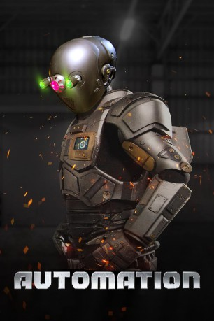

#12125 Automation *OmU*
 
 IMDB-Wertung: 2.7 / 10
IMDB-Wertung: 2.7 / 10  Metascore: 0
Metascore: 0 
A workplace robot, AUTO, transforms into a killing machine when he discovers he will be replaced by a more efficient model. AUTO fears being terminated and will stop at nothing to prevent his own destruction. The human employees must band together to stop him before it's too late.
Englisch mit englischen Untertiteln
Jahr: 2019
Dauer: 91 Minuten
FSK:
Land: USA Studio: Epic PicturesTonspuren:
Untertitel: Englisch,
Auflösung: 1080p (1912x808) Größe: 3256 MB
Genre: Sci-Fi
Regisseur: Garo Setian
Drehbuch: Rolfe Kanefsky, Matthew L. Schaffer, Garo Setian
Soundtrack: Joel Christian Goffin
Darsteller:
- Elissa Dowling als Jenny
- Sadie Katz als Susan
 Parry Shen als Alan
Parry Shen als Alan- Graham Skipper als Devin
- Sarah French als Linda
- Jeff Rector als Bill
- Anahit Setian als Marci
- Marv Blauvelt als Mel
- Jeff J. Knight als Auto
- Jim Tasker als Auto
- Tara Cardinal als Private Corrigan
- Wes Hubbard als Detective Parker
- Mary O'Neil als Paramedic Menzler
- Adam Sonnet als Police Officer
- Esther Goodstein als 911 Operator
- Kami Gladich als Jacqueline
 Victoria De Mare als Billboard Girl
Victoria De Mare als Billboard Girl- Garo Setian als Captain Dublee
- Josh Fallon als Rick
- Joshua Lou Friedman als Shovel Guy
- Bill Klinakis als Jared Williamson
- Keaton Bayne als Enemy Soldier
- Michael Leahy als Soldier
- Regan Smithweiss als Christmas Party Cocktail Waitress (uncredited)
- Daniel Spilatro als Employee at Party (uncredited)
Datei: X:\2019(A-F)\Automation OmU (2019, FSK, 1912x808).mkv seit 10.12.2019
Festplatte: HD 2018(G-Z)-2019(A-Z)
 Es gibt insgesamt 60 Filme in der Gruppe '2019(A-F)'
Es gibt insgesamt 60 Filme in der Gruppe '2019(A-F)'